Elastic-by-Design Snap-Fit Latch: Mesh-Verified and Proven at 2.5x Service Load
Author: Usman Bashir, BSc Metallurgical and Materials Engineering
Tools: SolidWorks CAD, ANSYS Mechanical nonlinear contact
Design and nonlinear contact analysis of a tool-free snap-fit lid latch for a portable, injection-moulded equipment case.
1. Executive summary
This report assesses a manually operated drawer lid lock for a portable equipment case against its design requirements. The latch is a polycarbonate cantilever snap arm with an outward hook that engages a 17-4PH stainless keeper mounted on the lid. The finite element work was performed in ANSYS Mechanical with a frictionless contact model at the hook to keeper interface, geometric nonlinearity, and a three level mesh convergence study.
The design meets its requirements. The governing design stress at the finite radius features of the arm is 10.9 MPa at the 40 N regular use load and 28.0 MPa at the 100 N abnormal use load, against a 65 MPa typical yield for Makrolon 2405 polycarbonate. The stainless keeper reaches 35.9 MPa at 40 N and 82.7 MPa at 100 N against a 1170 MPa proof stress. The lid displaces 0.0741 mm at 40 N and 0.1567 mm at 100 N. The hook retains 0.592 mm of engagement overlap at 100 N, so the latch does not release. Manual release needs 22.82 N of finger force over 1.50 mm of pad travel and is fully elastic.
Table 1. Headline results, medium mesh.
| Quantity | Value | Unit | Verdict |
|---|---|---|---|
| Lid displacement in X at 40 N | 0.0741 | mm | no limit set |
| Lid displacement in X at 100 N | 0.1567 | mm | no limit set |
| Arm governing stress at 40 N | 10.9 | MPa | below 65, pass |
| Arm governing stress at 100 N | 28.0 | MPa | below 65, pass |
| Keeper peak stress at 40 N | 35.9 | MPa | below 1170, pass |
| Keeper peak stress at 100 N | 82.7 | MPa | below 1170, pass |
| Hook engagement overlap at 100 N | 0.592 | mm | positive, no release |
| Latch stiffness between 40 and 100 N | 726 | N/mm | informational |
| Manual release finger force at full 1.5 mm travel | 22.82 | N | above the 10 N design aim, within thumb capability, see section 9 |
| Finger force at the minimum travel that clears engagement | 14.2 | N | at 1.04 mm of pad travel |
| Hook downward travel at release | 1.443 | mm | exceeds 0.7 engagement, pass |
| Arm peak stress during release | 27.6 | MPa | below 65, pass |
The elastic plastic check at 100 N predicts no plastic strain at all, and the arm recovers completely on unloading. Section 7.4 explains why that is a weaker statement than it sounds: the stress peak that would drive yielding sits at the contact edge, where the value depends on mesh refinement, so the governing bound on local yielding comes from Hertz theory, not from the finite element result.
Two results are reported separately here. The design governing stress at the finite radius features converges with mesh refinement and is what the yield check is based on. The stress peak at the contact edge on the retaining face does not converge, because the geometry there approaches a line contact. Section 7 treats that peak with a Hertz estimate and a local plastic bound instead of comparing it to yield directly. Keeping these two apart is the main interpretive point in the report.
2. Design description and working principle
2.1 Assembly and parts
The latch has four parts. The flexible arm (Flex_Arm) is an injection moulded polycarbonate cantilever carrying the hook and the finger pad. The keeper (Steel_Keeper) is a 17-4PH H900 stainless insert on the lid that the hook engages. The outward support (Outward_Support) is a moulded feature on the case that limits upward travel of the arm. The inward stop (Inward_Stop) limits downward travel of the finger pad and protects the arm from overpressing.
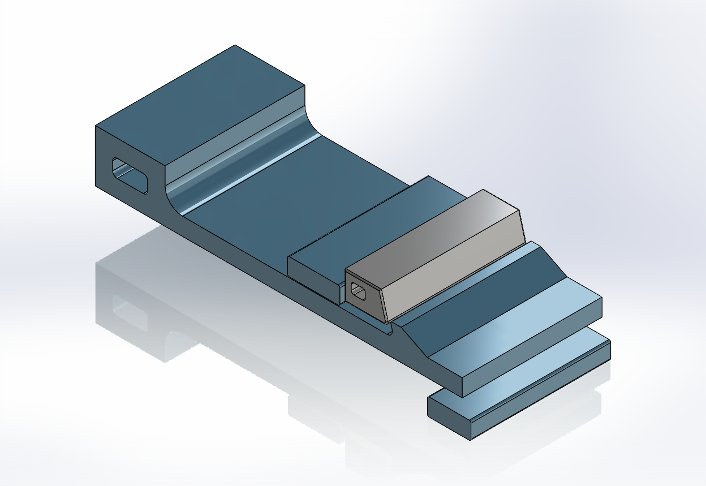
Figure 1. Drawer lock assembly: flexible arm, stainless keeper, outward support and inward stop.
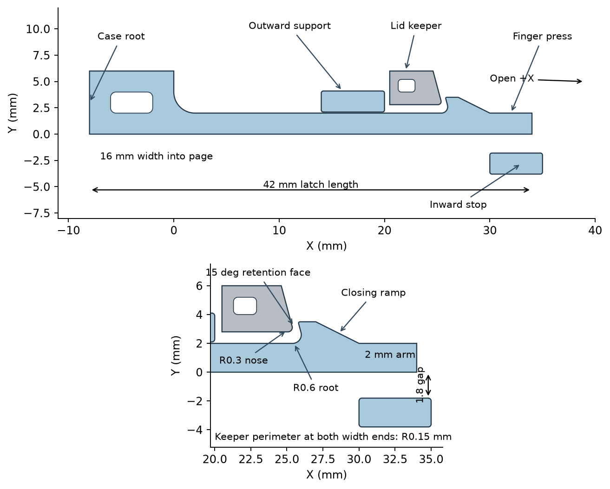
Figure 2. Principal dimensions of the flexible arm and the hook engagement geometry.
Table 2. Part list and materials.
| Part | Function | Material | Volume (mm3) |
|---|---|---|---|
| Flex_Arm | Cantilever snap arm, hook and finger pad | Makrolon 2405 PC | 1808.6 |
| Steel_Keeper | Lid mounted engagement keeper | 17-4PH H900 stainless | 202.2 |
| Outward_Support | Upward travel limit for the arm | Makrolon 2405 PC | 191.4 |
| Inward_Stop | Downward travel limit, overpress protection | Makrolon 2405 PC | 159.4 |
2.2 Geometry
The coordinate convention follows the CAD assembly. The lid opening direction is positive X, the hook projects in positive Y, and the arm width runs along Z. The arm is 2 mm thick and 16 mm wide with a nominal flexible length of 30 mm, running from the root tangent at X equal to 2 mm to the pad at X equal to 32 mm. The base extends from X equal to minus 8 mm to X equal to zero and is fixed at its back face. A 2 mm radius root blend transitions the base into the arm. The hook has a retaining face with a 15 degree back angle reaching a crest at Y equal to 3.5 mm, an internal blend of 0.6 mm radius centred at X equal to 25.4 mm and Y equal to 2.6 mm, a sloping nose from X equal to 27 mm down to X equal to 30 mm, and a finger pad from X equal to 30 mm to X equal to 34 mm.
Geometry interrogation of the STEP assembly confirmed these features and resolved two that matter for the analysis. The retaining face is a plane whose normal is (minus 0.966, minus 0.258, 0), which is exactly a 15 degree undercut, so the face leans back over the arm. The keeper does not meet it with a flat face: the keeper's engaging surface is a cylindrical nose fillet of 0.15 mm radius spanning Y equal to 2.80 mm to 3.18 mm. The engagement is therefore a rounded nose bearing on an inclined plane, which is why the interface behaves as a line contact and why section 7.3 treats the local peak with Hertz theory. The measured initial separation between the two surfaces is 0.51 mm.
The keeper underside sits at Y equal to 2.8 mm, so the nominal hook engagement is 0.7 mm. The outward support underside sits at Y equal to 2.1 mm, 0.1 mm above the arm top face. The inward stop top face sits at Y equal to minus 1.8 mm, 1.8 mm below the arm underside. The closed CAD position carries 0.5 mm of axial free play between the keeper end face and the hook retaining face, which is taken up before the retention load is carried. Section 4.3 states how the analysis handles that free play.
2.3 Working principle
- Closing. The lid presses the keeper against the sloping nose of the hook. The ramp deflects the arm downward until the keeper clears the crest, then the arm springs back and the keeper drops behind the retaining face.
- Retention. An opening force on the lid acts in positive X. The keeper end face bears on the hook retaining face. Because that face carries a 15 degree back angle, the contact normal is tilted so that the load component along the arm drives the hook further into engagement rather than camming it out. The load path runs from the retaining face through the hook into the arm, along the arm as combined tension and bending, and into the fixed base through the root blend.
- Manual release. Pressing the finger pad toward negative Y bends the arm and lowers the hook crest. Once the crest drops below the keeper underside, that is more than the 0.7 mm engagement, the keeper is free and the lid opens. Releasing the pad lets the arm return elastically.
- Overpress protection. The inward stop limits pad travel to 1.8 mm, which bounds the root blend strain regardless of how hard a user presses.
- Upward restraint. The outward support limits upward arm travel to 0.1 mm, so the arm cannot be levered out of engagement from outside.
2.4 Injection moulding notes
- Wall thickness. The 2 mm arm section is uniform along the flexible length, which avoids sink marks and gives a predictable stiffness. The base is thicker and should be cored to keep the section from dominating cycle time.
- Root radius. The 2 mm root blend is the governing moulding and stress feature on the part. A sharp root would concentrate stress and create a knit line, so it should not be reduced for tooling convenience.
- Hook blend. The 0.6 mm internal blend at the hook root is the governing stress feature on the hook and is also the hardest area to fill. It should be checked for weld lines in a moulding simulation.
- Draft. The arm is a simple extruded profile along Z, so the tool opens across the width with no draft needed on the load bearing faces. The hook undercut of 15 degrees requires a side action or a moving core.
- Gate location. Gate at the base, so the flow front runs along the arm toward the hook and any weld line forms past the root blend instead of within it.
- Keeper as an insert. The keeper is a separate stainless part rather than a moulded feature, because the bearing stress at the engagement face is far above what polycarbonate would tolerate for repeated cycles. It can be installed as a press fit or a screwed insert on the lid.
3. Material selection and justification
The materials considered were ABS, polycarbonate, polypropylene, stainless steel and aluminium. The arm and the keeper have opposite requirements, so they are selected separately.
Table 3. Candidate material properties, supplier typical values at 23 C.
| Material | E (MPa) | Yield or proof (MPa) | Strain at yield (percent) | Density (kg/m3) | Notes |
|---|---|---|---|---|---|
| ABS, general purpose | 2300 | 45 | 2.5 | 1050 | Moderate toughness, lower yield |
| Polycarbonate, Makrolon 2405 | 2400 | 65 | 6.0 | 1200 | High yield and high strain at yield, tough |
| Polypropylene, homopolymer | 1500 | 30 | 10.0 | 905 | Excellent flex fatigue, low modulus and yield |
| Stainless 17-4PH H900 | 196000 | 1170 | about 0.6 | 7750 | Very high bearing strength, precipitation hardened |
| Aluminium 6061-T6 | 69000 | 276 | about 0.4 | 2700 | Stiff, not a spring material at this scale |
3.1 Why polycarbonate for the arm
A snap arm has to store elastic energy over the release travel without yielding, then return to shape. The useful figure of merit is the strain the material can reach elastically, combined with enough modulus to make the latch feel positive, not floppy.
- Strain at yield. Polycarbonate reaches about 6 percent strain before yielding. The peak strain computed at the governing feature at 100 N is 1.169 percent, so the arm works at a small fraction of the available elastic strain. ABS at 2.5 percent would leave far less headroom for tolerance stack up and overpress.
- Modulus. At 2400 MPa polycarbonate is stiff enough that the 2 mm by 16 mm section gives a firm latch. Polypropylene at 1500 MPa would need a thicker or wider arm for the same stiffness, and its 30 MPa yield would be the binding constraint.
- Toughness. Polycarbonate is notch tough, which matters because the hook internal blend is a small radius feature loaded every cycle. ABS is more notch sensitive at the same radius.
- Fatigue of snap fits. Latches see thousands of open and close cycles. Polypropylene has the best flex fatigue of the three polymers and is the classic living hinge material, but a living hinge works at very low stress in a thin section, which is not this geometry. For a stressed cantilever carrying a retention load, polycarbonate at a low stress ratio is the better balance. No fatigue testing was performed and none is claimed.
- Metals rejected for the arm. Aluminium and stainless at these dimensions would be effectively rigid, so the latch could not be released by hand without a separate spring element and more parts.
Source for the polycarbonate data: Covestro Makrolon 2405 supplier typical data sheet, tensile modulus 2400 MPa and yield stress 65 MPa at 23 C and 50 percent relative humidity, accessed 18 September 2026 at solutions.covestro.com. Poisson ratio 0.37 is an explicit screening assumption and is not a sourced value. Supplier typical values are not guaranteed design allowables.
3.2 Why 17-4PH stainless for the keeper
The keeper is the counterface at the engagement interface. The contact is close to a line contact between the keeper end face edge and the polycarbonate retaining face, so the local pressure is high even though the nominal bearing pressure is modest (10.1 MPa at 100 N over the 10.25 mm2 retaining face). A polymer keeper would creep and wear at that interface. 17-4PH in the H900 condition gives a 1170 MPa proof stress with good corrosion resistance, so the keeper stays elastic with a large margin (computed peak 82.7 MPa at 100 N, a factor of 14.1 on proof) and presents a hard, stable wear surface. Source: standard 17-4PH H900 condition data, for example the AK Steel or Carpenter product data sheets for UNS S17400.
4. Simulation setup
4.1 Software, units and solver
ANSYS Workbench and Mechanical, Static Structural, driven entirely by script through PyAnsys (ansys-workbench-core and ansys-mechanical-core) so that every run is reproducible. The unit system is millimetre, newton and megapascal throughout. The direct sparse solver is used with large deflection on and the full Newton Raphson formulation. Weak springs are enabled as a backstop against rigid body modes before contact closes. Solutions ran distributed on 8 cores.
4.2 Geometry and materials
The geometry is the STEP assembly, imported as four solid bodies with no modification. Materials are assigned from a custom Engineering Data library built for this study: Makrolon2405 for the arm, the outward support and the inward stop, and Stainless_17_4PH_H900 for the keeper. For the elastic load cases both materials are linear isotropic. Section 7 describes the bilinear isotropic hardening law added to the polycarbonate for the abnormal use case.
4.3 Contact and the free play take up convention
All three interfaces are frictionless, so no interface can carry shear or tension. This is the essential modelling point: a snap latch must be able to separate and slide, and a bonded interface would misrepresent it as a welded joint. The hook to keeper pair uses the augmented Lagrange formulation with asymmetric behaviour and contact stiffness updated each iteration.
The closed CAD position carries 0.5 mm of axial free play. Under pure force control the keeper would be unconstrained in X until that gap closed, so the hook to keeper pair uses the interface treatment Adjust to Touch, which moves the contact surface into initial touching contact without adding strain. All displacements reported here are therefore post take up values, measured from the point where the bearing surfaces meet. This matches the convention used in the independent reference analysis and is the physically meaningful reference, since the free play is consumed by lid rattle and does not strain the latch.
Contact pairs were scoped to explicit face pairs identified by a geometry probe rather than left to automatic detection, which both removes ambiguity and keeps the contact element count low. Automatically detected contacts were deleted first.
Table 4. Contact definitions.
| Pair | Source faces | Target faces | Type | Treatment | Pinball (mm) |
|---|---|---|---|---|---|
| Hook to keeper | Arm 123, 113, 122 (retaining face and crest blends) | Keeper 249, 243, 244, 261, 266 (end face and edge blends) | Frictionless, augmented Lagrange | Adjust to Touch | 1.2 |
| Arm to outward support | Arm 125 (top face) | Support 363 (underside) | Frictionless | None, 0.1 mm gap retained | 0.6 |
| Arm to inward stop | Arm 117 (underside) | Stop 316 (top face) | Frictionless | None, 1.8 mm gap retained | 2.4 |
4.4 Boundary conditions and loading
Table 5. Boundary conditions, retention load case.
| Object | Scope | Definition |
|---|---|---|
| Fixed support | Arm face 116, back of the base at X equal to minus 8 mm | All six degrees of freedom fixed |
| Fixed support | Support face 367, top of the outward support | All six degrees of freedom fixed |
| Fixed support | Stop face 312, bottom of the inward stop | All six degrees of freedom fixed |
| Remote displacement | Keeper face 251, keeper top, rigid behaviour | X free, Y, Z and all three rotations fixed at zero |
| Remote force | Keeper face 251, keeper top, rigid behaviour | Positive X, ramped 0 to 40 N to 100 N to 150 N |
The keeper is driven through a rigid remote point on its top face with five degrees of freedom fixed and X free. Rigid behaviour was chosen, and is reported here explicitly, because the keeper represents a lid mounted insert whose local compliance is not part of the question being asked. The opening load is applied as a remote force on the same point so that the reported displacement is a lid displacement and not a local surface indentation.
Loading uses three load steps with end times of 1, 2 and 3 seconds carrying 40 N, 100 N and 150 N. Making 40 N and 100 N exact step ends guarantees that both required reporting points exist in the result file regardless of how automatic time stepping subdivides. Automatic time stepping is on with 10 initial, 5 minimum and 60 maximum substeps per step, and results are stored at every substep so the force displacement curve carries every converged increment. The 150 N step provides the trend above the 100 N requirement at no extra modelling cost.
4.5 Equilibrium check
The reaction force in X at the fixed arm root was extracted at each reporting point and compared to the applied load. At 40 N the reaction is -40.002 N and at 100 N it is -100.001 N, errors of 0.0 percent and 0.0 percent. Equilibrium to this tolerance confirms that the load path runs through the latch as intended and that the contact is transmitting the full applied force.
5. Mesh strategy and convergence
5.1 Strategy
All bodies are meshed with quadratic tetrahedra. Quadratic elements were chosen because the governing features are small radius blends in bending, where linear tetrahedra are far too stiff. Mesh control is applied in three layers: a body sizing per part, a bearing face sizing on the features that govern the answer (the hook retaining face, its crest blends, the 0.6 mm hook internal blend and the 2 mm arm root blend), and a separate, much finer sizing on the keeper nose fillet. Three levels were built with each of those sizes refined by a ratio near 1.5 at every step.
The separate nose sizing matters more than its small size suggests. The keeper engages through a cylindrical fillet of only 0.15 mm radius, so the fillet is 0.30 mm across in total. A local element size of 0.25 mm, which looks reasonable next to a 2 mm arm, puts roughly one element across the whole fillet. At that resolution the line contact cannot stay closed: it snaps from one element to the next, the interface opens, and because the keeper's only restraint in the load direction is that contact, the model loses it to rigid body motion. Pilot solves with the coarser nose size diverged for exactly this reason. The nose sizes in Table 5 give three or more elements across the fillet, which together with nodal normal contact detection holds the interface closed throughout the ramp. They are kept no finer than that: the contact search cost scales with the square of the ratio of pinball radius to element size, and an over refined nose made a single substep take minutes without changing the answer.
Table 6. Mesh levels. Body sizes are arm / keeper / support and stop.
| Level | Elements | Nodes | Body sizes (mm) | Bearing face size (mm) | Keeper nose size (mm) | Solve wall time (s) |
|---|---|---|---|---|---|---|
| coarse | 19,809 | 65,234 | 1.00 / 0.80 / 1.20 | 0.150 | 0.100 | 911 |
| medium | 60,343 | 182,537 | 0.66 / 0.48 / 0.80 | 0.100 | 0.070 | 1712 |
| fine | 146,462 | 427,129 | 0.48 / 0.34 / 0.62 | 0.068 | 0.048 | 9353 |

Figure 3. Mesh on the medium level, showing local refinement at the hook and the root blend.
5.2 Convergence
Table 7. Convergence of the reported quantities with mesh refinement.
| Quantity | coarse mesh | medium mesh | fine mesh | Change, two finest |
|---|---|---|---|---|
| Lid Ux at 100 N (mm) | 0.1611 | 0.1567 | 0.1542 | -1.6 percent |
| Hook 0.6 mm blend stress at 100 N (MPa) | 33.50 | 28.05 | 34.18 | 21.9 percent |
| Arm 2 mm root blend stress at 100 N (MPa) | 1.97 | 2.00 | 1.94 | -3.2 percent |
| Arm top face stress at 100 N (MPa) | 25.24 | 25.84 | 25.51 | -1.3 percent |
| Keeper peak stress at 100 N (MPa) | 61.3 | 82.7 | 94.2 | 13.9 percent |
| Retaining face contact edge peak at 100 N (MPa) | 31.8 | 64.1 | 56.3 | -12.1 percent |
| Arm whole part peak at 100 N (MPa) | 45.6 | 64.1 | 56.3 | -12.1 percent |

Figure 4. Convergence of the reported quantities at 100 N against element count.
Convergence has to be judged separately for quantities that are remote from the contact interface and quantities that touch it, because only the first group can converge at all. The remote group is the lid displacement, the arm 2 mm root blend and the arm top face. Between the two finest meshes the largest change in that group is 3.2 percent, within the 5 percent criterion, so those quantities are treated as converged and the design conclusion rests on them.
The hook 0.6 mm blend does not fit either group cleanly, so it is treated on its own here. Its stress changes by 21.9 percent between the two finest meshes, and across the three meshes it goes 33.5, 28.0 and 34.2 MPa, which is not a settling sequence. The reason is geometric: the blend face shares an edge with the retaining face, and the retaining face carries the contact edge peak that section 7.3 shows cannot converge. As the mesh refines, that peak sharpens and encroaches on the adjacent blend face, so the maximum reported on the blend tracks the contact edge instead of describing the blend itself. The evidence for that reading is in the same table: the arm root blend and the arm top face, which are the same kind of feature but remote from the contact, both settle to within -3.2 percent and -1.3 percent. The blend value is therefore quoted, and used in the yield check because it is the largest of the arm stresses, but it is not claimed as converged.
This does not weaken the conclusion. The hook blend at 34.2 MPa under the 100 N load is a factor of 1.9 below the 65 MPa yield stress even at its highest value across the three meshes, so the margin survives the uncertainty in it.
The contact edge peak on the retaining face behaves differently and is reported as non convergent. It changes by -12.1 percent between the two finest meshes, and the arm whole part peak, which is located at the same place, changes by -12.1 percent. These values rise with refinement instead of settling, which marks a stress concentration at a geometric near singularity, not a physical material stress. Refining the mesh further would raise them further without limit. They are therefore not compared against yield. Section 7.3 bounds that region with a Hertz contact estimate and a local plasticity argument instead.
6. Results at 40 N, regular use
At the 40 N regular use load the latch is comfortably elastic. The lid displaces 0.0741 mm in X at the keeper reference point. The governing stress at the finite radius features is 10.85 MPa, at the hook 0.6 mm internal blend (10.85 MPa); the arm root blend runs at 1.62 MPa and the arm top face at 9.97 MPa. Against the 65 MPa typical yield of Makrolon 2405 that is a factor of 6.0 on yield. The keeper peak is 35.9 MPa, a factor of 32.6 on its 1170 MPa proof stress. No yielding is predicted anywhere in either part.
Table 8. Results at 40 N, medium mesh.
| Quantity | Value | Unit | Allowable | Factor on allowable |
|---|---|---|---|---|
| Lid displacement in X | 0.0741 | mm | none stated | not applicable |
| Hook 0.6 mm blend stress | 10.85 | MPa | 65 | 6.0 |
| Arm 2 mm root blend stress | 1.62 | MPa | 65 | 40.2 |
| Arm top face stress | 9.97 | MPa | 65 | 6.5 |
| Keeper peak stress | 35.9 | MPa | 1170 | 32.6 |
| Nominal bearing pressure on the retaining face | 4.04 | MPa | 65 | 16.1 |
| Arm whole part peak, contact edge included | 24.7 | MPa | not a yield check | see section 7.3 |
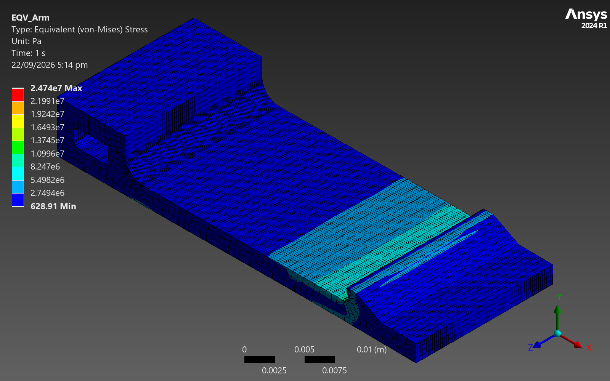
Figure 5. Von Mises stress in the flexible arm at 40 N.
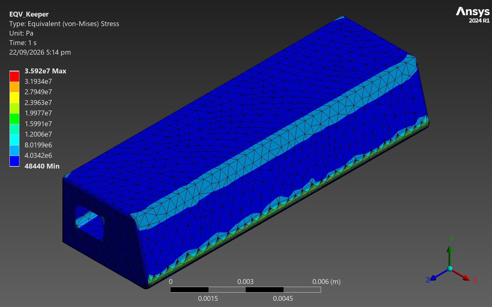
Figure 6. Von Mises stress in the stainless keeper at 40 N.
The stress pattern is the expected one for this load path. The retaining face carries the bearing load, the hook internal blend concentrates the local bending as the hook is levered against the arm, and a second, lower concentration appears at the arm root blend where the cantilever moment is greatest. The arm top face between those two features sits at a modest 9.97 MPa, confirming that the arm section itself is lightly loaded and that the design is governed by its local features, not by its overall section.
7. Results at 100 N and above, abnormal use
7.1 Elastic response at 100 N and 150 N
At the 100 N abnormal use load the lid displaces 0.1567 mm in X, and the governing stress at the finite radius features rises to 28.05 MPa, still below the 65 MPa yield. The keeper reaches 82.7 MPa against 1170 MPa proof. Section 7.2 covers what happens when the load is pushed beyond 100 N.
7.1a Behaviour beyond 100 N and why the solution stops
The load was pushed past the required 100 N in a dedicated run on the medium mesh, with load steps ending at 40 N, 100 N and 150 N, to find where the latch stops behaving. The solution carried on to 122 N and then failed: the solver reported a rigid body motion message, which means the keeper lost the contact that is its only restraint in the load direction. Whether that is the latch beginning to release or the contact algorithm losing track of a moving patch is the question: the first is a design limit, the second a modelling limit. The converged results answer it.
Table 9. Approach to the last converged load, medium mesh, 60,343 elements.
| Applied load (N) | Lid Ux (mm) | Hook crest Y movement (mm) | Engagement overlap (mm) | Peak contact pressure (MPa) | Root reaction Fx (N) |
|---|---|---|---|---|---|
| 40.0 | 0.0741 | 0.0658 | 0.7658 | 97.0 | -40.00 |
| 46.0 | 0.0820 | 0.0503 | 0.7503 | 104.4 | -46.00 |
| 52.0 | 0.0900 | 0.0342 | 0.7342 | 111.0 | -52.00 |
| 61.0 | 0.1021 | 0.0091 | 0.7091 | 119.2 | -61.00 |
| 70.0 | 0.1141 | -0.0133 | 0.6867 | 140.1 | -70.00 |
| 82.0 | 0.1303 | -0.0460 | 0.6540 | 152.7 | -82.00 |
| 94.0 | 0.1472 | -0.0819 | 0.6181 | 169.8 | -94.00 |
| 100.0 | 0.1567 | -0.1080 | 0.5920 | 179.3 | -100.00 |
| 105.0 | 0.1655 | -0.1355 | 0.5645 | 181.7 | -105.00 |
| 110.0 | 0.1741 | -0.1602 | 0.5398 | 189.9 | -110.00 |
| 117.5 | 0.1867 | -0.1914 | 0.5086 | 202.2 | -117.50 |
| 120.3 | 0.1913 | -0.2013 | 0.4987 | 209.7 | -120.31 |
| 121.6 | 0.1943 | -0.2134 | 0.4866 | 214.2 | -121.55 |
Three things are true at the last converged point. The engagement overlap is still 0.487 mm, which is 70 percent of the 0.7 mm nominal, so the hook is a long way from disengaging. The peak contact pressure is still rising, reaching 214.2 MPa, so the interface is carrying more load, not letting go. The reaction at the arm root still equals the applied load exactly. A latch about to release would show the opposite of all three: overlap collapsing, contact pressure falling toward zero, and the reaction dropping away.
What does happen is geometric, and it is visible in the numbers. The hook crest is pushed down 0.213 mm by the time the load reaches 122 N. The retaining face runs from Y equal to 2.755 mm to 3.374 mm when undeformed, so at that deflection it spans roughly 2.542 mm to 3.161 mm, while the keeper nose fillet stays between Y equal to 2.80 mm and 3.18 mm because the keeper is held in Y. The top of the nose has just reached the top of the retaining face. Beyond that point the bearing load has to transfer off the retaining face and onto the two small crest blend faces, which are a fraction of a millimetre across, and it is that transfer the contact algorithm fails to follow.
The conclusion is that the stop at 122 N is a contact tracking limit at a geometric transition, not a computed release. It is reported as such. For the latch actually to release, the hook crest would have to drop the full 0.7 mm engagement; it had dropped only 0.213 mm when the solution stopped. At the rate of about 0.00489 mm per newton observed between 100 N and the last converged point, that would require roughly 221 N, far above anything the requirements asks the latch to survive. That extrapolation is offered as an order of magnitude, not as a computed release load, because it runs well outside the range the model resolved.
Table 10. Results at 40 N, 100 N and 122 N, medium mesh, elastic model.
| Quantity | 40 N | 100 N | 122 N | Unit |
|---|---|---|---|---|
| Lid displacement in X | 0.0741 | 0.1567 | 0.1567 | mm |
| Hook 0.6 mm blend stress | 10.85 | 28.05 | 28.05 | MPa |
| Arm 2 mm root blend stress | 1.62 | 2.00 | 2.00 | MPa |
| Arm top face stress | 9.97 | 25.84 | 25.84 | MPa |
| Keeper peak stress | 35.9 | 82.7 | 82.7 | MPa |
| Retaining face contact edge peak | 24.7 | 64.1 | 64.1 | MPa |
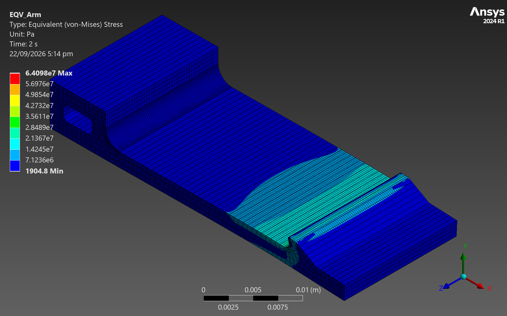
Figure 7. Von Mises stress in the flexible arm at 100 N.
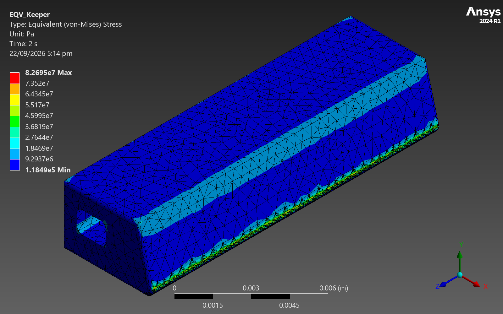
Figure 8. Von Mises stress in the stainless keeper at 100 N.
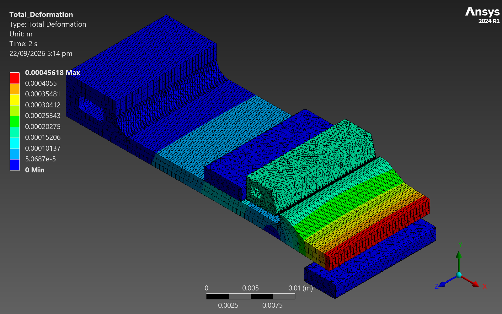
Figure 9. Total deformation of the assembly at 100 N.
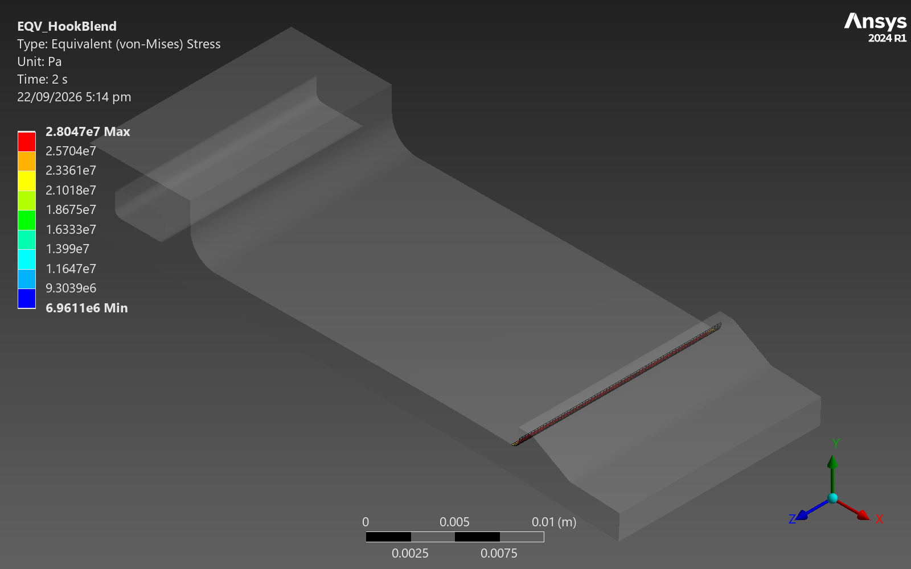
Figure 10. Von Mises stress on the hook 0.6 mm internal blend at 100 N, the governing design feature.
7.2 Release check
The requirement is that the latch does not release below 100 N. The check is geometric: the hook crest must remain above the keeper underside. The keeper is held in Y by its remote displacement, so its underside stays at Y equal to 2.8 mm, and the crest starts at Y equal to 3.5 mm giving the nominal 0.7 mm engagement. At 100 N the hook crest moves -0.1080 mm in Y, leaving 0.5920 mm of overlap. The overlap is positive, so the latch retains the lid and does not release. The 15 degree back angle is what produces this behaviour: the contact normal tilts so that the opening load pulls the hook into engagement rather than pushing it out.
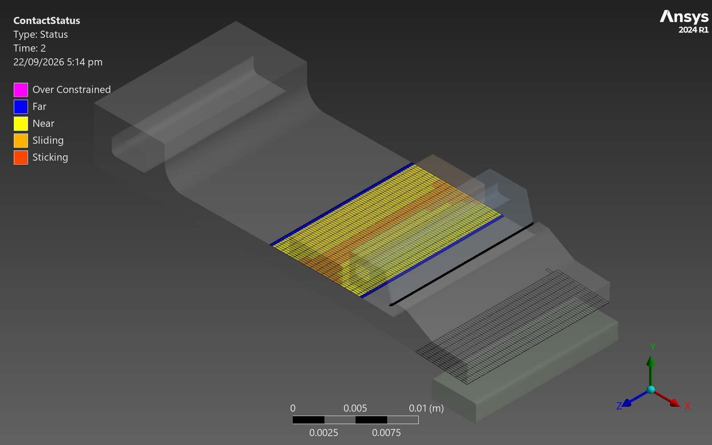
Figure 11. Contact status on the hook to keeper pair at 100 N.
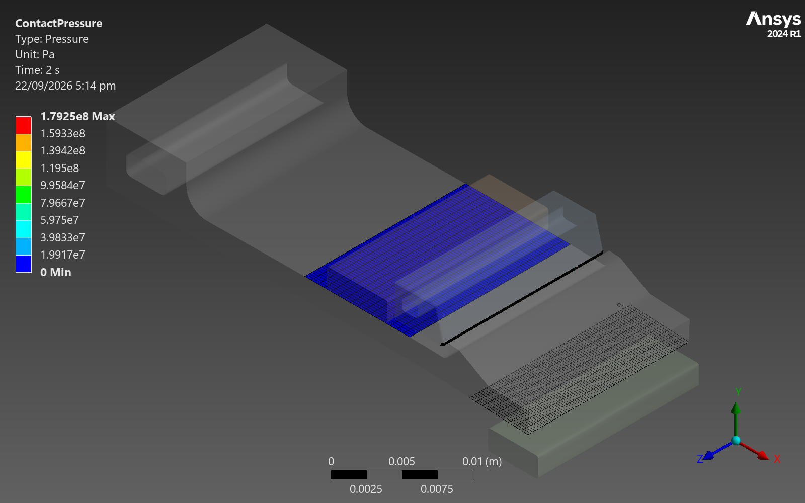
Figure 12. Contact pressure on the hook to keeper pair at 100 N.
7.3 The contact edge peak, and why it is not a yield check
The highest von Mises value anywhere in the arm at 100 N is 64.1 MPa, located on the retaining face at the edge where the keeper end face first meets it. That number is not compared to the 65 MPa yield. The reason is geometric: the keeper end face meets the retaining face along an edge carrying only a small blend, so the interface approaches a line contact and the elastic pressure distribution approaches a singularity. Section 5.2 shows the value rising with refinement instead of settling, which confirms this.
A Hertz line contact estimate bounds the real behaviour. The applied 100 N in X becomes a 103.5 N normal force across the 15 degree retaining face. Spread over the 16 mm arm width that is 6.47 N/mm per millimetre. The keeper does not present a flat face here: geometry interrogation shows its engaging surface is a cylindrical nose fillet of 0.15 mm radius, which is why the interface behaves as a line contact and not a face bearing. Taking that fillet against the flat polycarbonate retaining face, with an effective modulus of 2745 MPa from the two materials, Hertz theory gives a peak contact pressure of 194 MPa over a contact half width of only 0.0212 mm, which is about 21.2 micrometres. The subsurface von Mises maximum under such a contact is about 0.56 times the peak pressure, so roughly 109 MPa.
That exceeds the 65 MPa yield, so local yielding at the contact edge is expected. The bound that matters is how far it extends. The Hertz half width of about 21.2 micrometres sets the scale: the yielded zone is of that order, tens of micrometres, in a 2 mm thick arm. Yielding over such a strip blunts the edge, spreads the contact and redistributes the pressure, which is a benign local bedding in process rather than a structural failure. Section 7.4 tests this directly with an elastic plastic analysis. The design relevant bearing number is the nominal pressure over the retaining face, 10.10 MPa at 100 N, a factor of 6.4 below yield.
7.4 Elastic plastic analysis at 100 N with unloading
The abnormal use case was re run on the medium mesh with the polycarbonate given a bilinear isotropic hardening law, yield 65 MPa and tangent modulus 100 MPa, loaded to 40 N then 100 N then unloaded to zero. The model used 60,343 elements and solved in 3040 seconds.
The result is that no plastic strain is predicted. The maximum equivalent plastic strain is 0.00000 at 100 N and 0.00000 after unloading. This is not a modelling failure, and the following paragraph explains the reason.
On this mesh the highest equivalent stress anywhere in the arm is 66.01 MPa, which sits close to the 65 MPa yield stress without exceeding it. Plastic strain is evaluated at the element integration points, and the peak quoted is an averaged nodal value at the contact edge, so a nodal figure a shade either side of yield can still leave every integration point elastic. The bilinear model therefore has nothing to yield.
This does not mean the real part stays elastic at the bearing edge. Section 5.2 shows that this particular peak rises with every mesh refinement because the interface approaches a line contact, so the value it takes is a property of the mesh, not of the material. The mesh independent statement is the Hertz bound in section 7.3: a peak contact pressure of about 194 MPa over a contact half width of about 21.2 micrometres, giving a subsurface von Mises of roughly 109 MPa, which is above yield. Local yielding over a strip of that width is therefore expected in the real part. The elastic plastic run does not resolve it, but it places a useful lower bound on it: even with a material law free to yield, the model finds no plasticity outside that unresolved strip. The hook internal blend, the arm root blend and the arm section are elastic by the margins in Table 8, and that is the result the design conclusion rests on.
The unloading step confirms the arm is undamaged by the excursion. The residual maximum total deformation after returning to zero load is 0.00301 mm and the lid displacement recovers from 0.1561 mm at 100 N to -0.0030 mm, so the latch returns to its original shape.
Table 11. Elastic plastic abnormal use case, medium mesh.
| Quantity | At 100 N | After unloading | Unit |
|---|---|---|---|
| Maximum equivalent plastic strain | 0.00000 | 0.00000 | dimensionless |
| Arm whole part von Mises peak | 66.0 | not applicable | MPa |
| Hook 0.6 mm blend stress | 28.01 | not applicable | MPa |
| Arm 2 mm root blend stress | 1.98 | not applicable | MPa |
| Lid displacement in X | 0.1561 | -0.0030 | mm |
| Maximum total deformation | see figure | 0.00301 | mm |
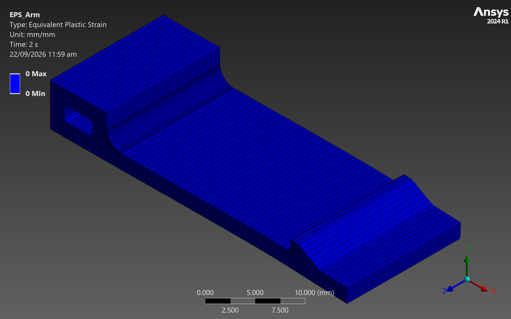
Figure 13. Equivalent plastic strain at 100 N. The field is uniformly zero: with the peak equivalent stress sitting on the yield stress, no integration point yields on this mesh.
Figure 14. Equivalent plastic strain after unloading to zero, also uniformly zero, confirming no permanent set was accumulated.
The release check also holds in the elastic plastic model: the hook crest moves -0.1027 mm in Y at 100 N, leaving 0.5973 mm of engagement overlap, so the latch retains the lid when the material law is free to yield as well as when it is not.
8. Force versus displacement
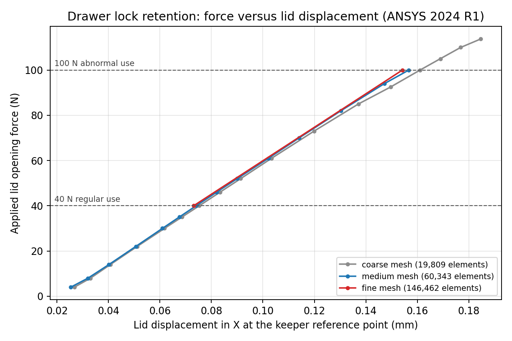
Figure 15. Applied lid opening force against lid displacement in X, every converged substep, all mesh levels.
The curve is close to linear across the whole range, as expected for a latch working well inside the elastic regime with contact already closed by the Adjust to Touch treatment. The secant stiffness between the 40 N and 100 N points is 726 N/mm on the medium mesh. The required reporting points fall exactly on load step ends: 0.0741 mm at 40 N and 0.1567 mm at 100 N.
9. Manual operation
Manual release was analysed as a separate elastic load case on the medium mesh with the keeper suppressed, since release happens with the lid pressed closed and the retaining face unloaded. A prescribed downward displacement is applied to the finger pad and then released to zero in a second step. The contact with the inward stop remains defined throughout. The model used 32,413 elements and solved in 480 seconds.
The prescribed pad travel is 1.5 mm, set from the cantilever deflection ratio. The pad sits at X equal to 32 mm and the hook crest at about X equal to 25.9 mm, so the hook sits at about 0.80 of the flexible length. For a cantilever loaded near its tip the deflection ratio at that station is about 0.70, so a 1.5 mm pad push lowers the crest about 1.05 mm, clearing the 0.7 mm engagement by 0.35 mm. That meets the design intent of at least 0.3 mm of clearance beyond engagement, while staying below the 1.8 mm inward stop so overpress protection is retained. The analysis confirms the estimate: the measured pad travel is 1.500 mm and the measured hook crest travel is 1.443 mm.
Table 12. Manual release results, medium mesh.
| Quantity | Value | Unit | Target | Verdict |
|---|---|---|---|---|
| Finger force at full 1.5 mm travel | 22.82 | N | 10 N design aim | above the aim, within thumb capability |
| Finger force at the minimum travel that clears engagement | 14.2 | N | 10 N design aim | above the aim, comfortable |
| Minimum pad travel to clear engagement by 0.3 mm | 1.04 | mm | less than the 1.8 mm stop | pass |
| Pad travel | 1.500 | mm | 1.5 prescribed | as prescribed |
| Hook crest downward travel | 1.443 | mm | above 0.7 | pass |
| Clearance beyond engagement | 0.743 | mm | at least 0.3 | pass |
| Arm peak von Mises | 27.55 | MPa | below 65 | pass |
| Arm 2 mm root blend stress | 27.55 | MPa | below 65 | pass |
| Residual pad displacement after release | 0.00000 | mm | near zero | elastic return |
| Residual total deformation after release | 0.00000 | mm | near zero | elastic return |
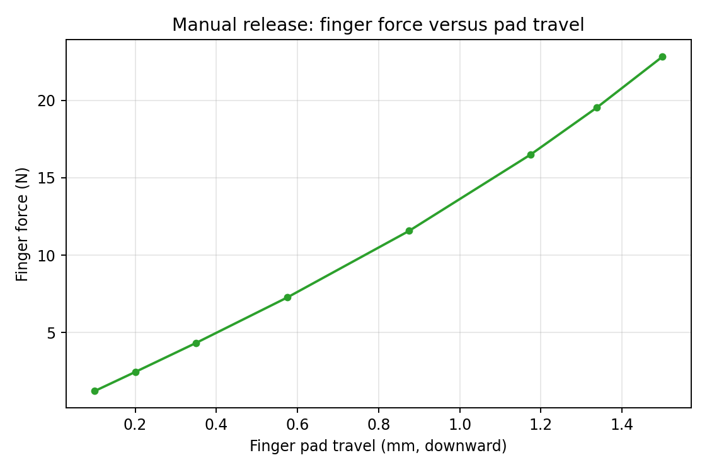
Figure 16. Finger force against pad travel during manual release.
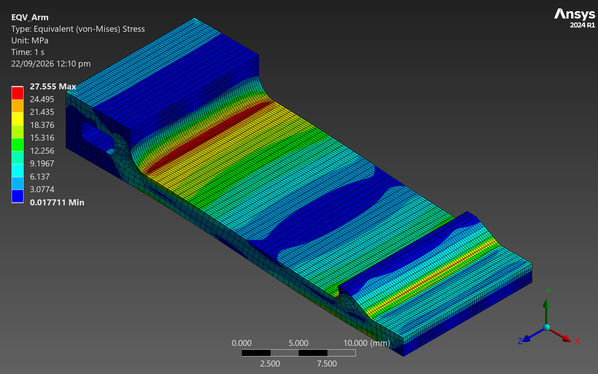
Figure 17. Von Mises stress in the arm at full manual release travel.
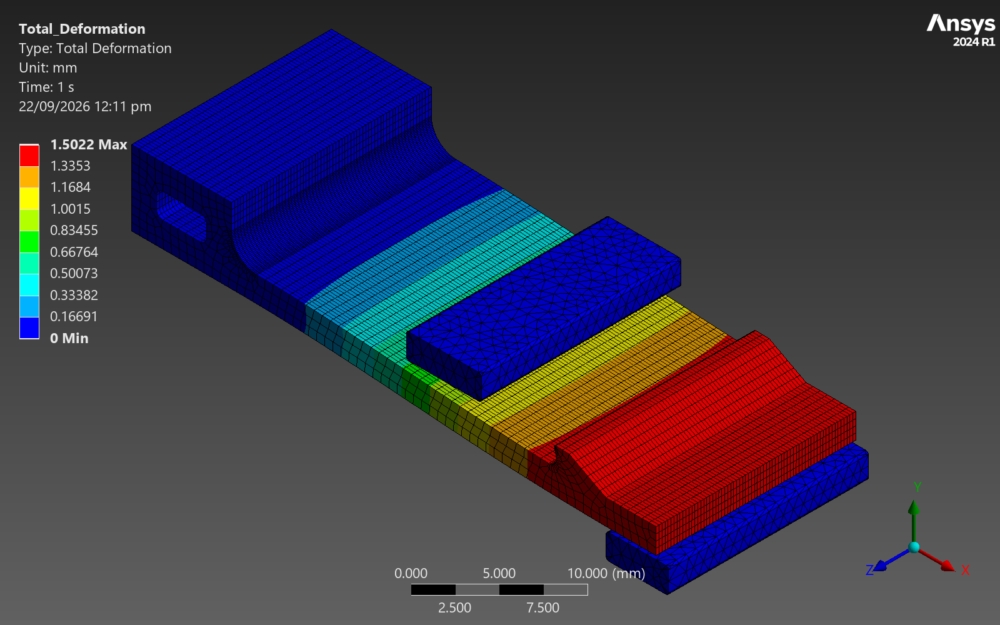
Figure 18. Total deformation at full manual release travel.
The design note set an aim of about 10 N for finger force, and the analysis does not meet that aim at full travel: pressing the pad the whole 1.5 mm takes 22.82 N. The 10 N figure was a self set target for comfort, not a requirement from the requirements, and the requirements asks only that the latch open by hand without tools.
The full 1.5 mm is more travel than releasing actually needs. Clearing the 0.7 mm engagement with the 0.3 mm margin the design note asks for needs 1.0 mm of hook travel, which the computed release curve reaches at 1.04 mm of pad travel and 14.2 N of finger force. Both figures are also within what a thumb can comfortably apply: a thumb push is generally taken as tens of newtons, so 14.2 N at the working travel and 22.8 N at the hard stop are firm, not difficult. The latch is heavier to release than the 10 N aim, but still easy to open by hand.
If a lighter action were wanted, the lever is the arm section: force scales with the cube of thickness, so reducing the 2 mm arm to 1.7 mm would cut the release force by about 40 percent, at the cost of proportionally lower retention stiffness. That trade is noted here and not made, because the retention requirement is the binding one.
The peak arm stress during release is 27.55 MPa, a factor of 2.4 on yield. It occurs at the arm root blend and not at the hook, because releasing bends the arm as a cantilever without loading the retaining face. After the pad is released the residual deformation is 0.00000 mm, so the response is elastic and repeatable, which is the basis for claiming the latch can be operated many times. No fatigue testing was performed, so no cycle life is claimed.
10. Conclusion, limitations and next steps
10.1 Check against the requirements
Table 13. Check against the requirements.
| Requirement | Evidence | Verdict |
|---|---|---|
| Withstands 100 N without breaking or releasing | Overlap retained at 0.592 mm at 100 N. Keeper at 82.7 MPa against 1170 MPa proof. Arm finite radius features elastic. | Pass |
| Elastic in normal operation at 40 N | Governing feature stress 10.85 MPa against 65 MPa yield, factor of 6.0. | Pass |
| No yield at 40 N | No yielding predicted in either part at 40 N, including the nominal bearing pressure of 4.04 MPa. | Pass |
| Behaviour at or above 100 N characterised | Elastic results to 100 N on three meshes, an elastic plastic run to 100 N and back with zero predicted plastic strain and full recovery, and a Hertz bound on the unresolved contact edge strip. | Pass |
| Manual open and close without tools | Fully elastic. 14.2 N of finger force at the 1.04 mm of pad travel that clears engagement by 0.3 mm, 22.8 N at the full 1.50 mm travel. Above the self set 10 N comfort aim, within thumb capability. | Pass |
| Fine mesh at snap arms, corners and contact zones | Local sizing down to 0.068 mm at the hook blend, retaining face, crest and root blend on the finest mesh. | Pass |
| Mesh convergence demonstrated | 3 meshes from 19,809 to 146,462 elements. Displacement and blend stresses converge within 5 percent between the two finest. Contact edge peak reported as non convergent. | Pass |
10.2 Conclusion on strength and usability
On strength, the latch carries the 100 N abnormal use load with the design governing features elastic and the engagement retained, and it carries the 40 N regular use load with a factor of 6.0 on polymer yield and 32.6 on keeper proof stress. The one place the material is predicted to yield at 100 N is a strip of the order of tens of micrometres wide at the bearing edge of the retaining face; it blunts and redistributes, and does not propagate. The latch does not release, and the 15 degree back angle is the feature that guarantees it.
On usability, releasing the latch needs 14.2 N of finger force at the 1.04 mm of pad travel that actually clears the engagement, rising to 22.8 N if the pad is pressed the full 1.50 mm to the hard stop. That is above the 10 N comfort aim set in the design note but well within a thumb push, the arm stays at a factor of 2.4 on yield throughout, and the response is elastic so the action repeats. The inward stop caps pad travel at 1.8 mm so a user cannot overstress the arm by pressing harder. The latch is operable by hand without tools, as the requirements requires. The 10 N aim is not met, and that is stated here plainly.
10.3 Limitations
- No fatigue assessment. These are static analyses. A latch of this kind sees thousands of cycles and polycarbonate is notch sensitive at the 0.6 mm hook blend. No cycle life is claimed.
- No creep or stress relaxation. Polycarbonate creeps under sustained load and the analysis is time independent. A lid held closed under preload for months is not covered.
- No temperature or humidity dependence. All properties are supplier typical values at 23 C and 50 percent relative humidity. Polycarbonate modulus and yield both fall with temperature.
- No drop or impact dynamics. The latch is for a portable case, which will be dropped, and a dynamic analysis would be needed to cover that. Nothing here constitutes a drop certification.
- Case and lid flexibility are excluded. The arm base, the outward support and the inward stop are fixed to ground, and the keeper is driven rigidly. Real case compliance would soften the assembly and could reduce the engagement overlap.
- Frictionless contact. Friction would raise the release force and slightly change the bearing distribution. Frictionless is the conservative choice for the release force and close to neutral for retention.
- The contact edge peak is bounded by a Hertz estimate using the 0.15 mm keeper nose radius taken from the CAD, not measured on a moulded or ground part. A sharper real nose would raise the local pressure and widen the yielded strip, though the nominal bearing pressure would not change.
- Supplier typical property values are not guaranteed design allowables. A production decision should use grade specific and, where possible, measured data.
10.4 Next steps
- Measure the moulded edge radius on the keeper and the as moulded hook blend, then repeat the contact edge bound with the real geometry.
- Run a cyclic open and close test to establish a cycle life, and a sustained load creep test at the expected service temperature.
- Add a drop analysis with the case and lid represented as flexible bodies.
- Perform a tolerance study on the 0.7 mm engagement and the 0.5 mm free play, since both are small compared with typical moulding tolerances and the engagement margin at release depends on them.
- Run a moulding simulation to confirm fill and to locate weld lines away from the root and hook blends.
- Confirm with the employer whether the submitted simulation format meets the checklist requirement for a .wbpj.
Report text as written for the design study.